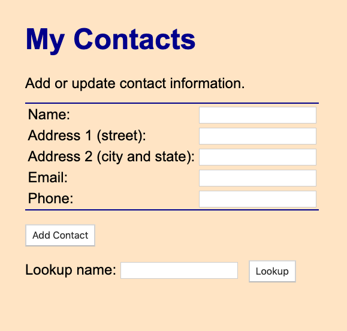

添加前端样式
CSS是一种常用的定制用户体验的方法。
本教程讲解了如何给React创建的项目添加样式表。
如果你已经了解了如何给React项目添加样式表，可以跳过本教程。
注意： 本教程说明了如何使用 React 框架来管理Canister的文档对象模型 (DOM)。 因为 React 有自己自定义的 DOM 语法，所以需要修改 webpack 配置来编译前端代码，前端代码是用 JSX 编写的。 有关学习使用 React 和 JSX 的更多信息, 请参考Getting started 通过 React网站.
开始之前
开始之前，需要检查以下内容：
-
为前端开发安装了node.js并且可以使用npm install在项目中安装包。需要更多关于安装node和包管理器的信息，请查看Node网站
-
已经下载并安装了DFINITY Canister SDK
-
安装了Motoko 的VSCode 插件
-
终止了所有ICP网络进程
注意： 本教程要求使用0.8.0版本或更高版本的sdk
安装React框架
如果你不了解React框架，可以在React网站 进行探索。
安装React模块步骤如下：
-
运行下面的命令安装React模块
npm install --save react react-dom -
运行下面的命令安装Typescript加载器:
npm install --save-dev typescript ts-loader -
运行以下命令安装所需的样式加载器：
npm install --save-dev style-loader css-loader如果 npm install 命令报告漏洞，您可能还需要运行 npm audit fix 命令尝试修复报告的漏洞，然后再继续。
注意: 另一个安装模块的方法是，你可以编辑package.json文件来添加模块
{ "name": "contacts_assets", "version": "0.1.0", "description": "", "keywords": [], "scripts": { "build": "webpack" }, "devDependencies": { "assert": "2.0.0", "buffer": "6.0.3", "css-loader": "^5.2.1", "events": "3.3.0", "html-webpack-plugin": "5.3.1", "process": "0.11.10", "stream-browserify": "3.0.0", "style-loader": "^2.0.0", "terser-webpack-plugin": "5.1.1", "ts-loader": "^8.1.0", "typescript": "^4.2.4", "util": "0.12.3", "webpack-cli": "4.5.0", "webpack": "5.24.4" }, "dependencies": { "@dfinity/agent": "0.10.0", "@dfinity/candid": "0.10.0", "@dfinity/principal": "0.10.0", "react-dom": "^17.0.2", "react": "^17.0.2" } }JavaScript的package.json版本为0.10.0。但是多数情况下，需要使用最新版本的代理。
当你创建新项目时，dfx new 命令会自动检索最新版本的JavaScript版本，你也可以手动检索最新版本，通过以下命令：
npm install --save @dfinity/agent
修改默认程序
本章节中，你将会修改主程序，以便你可以保存和查询联系信息。
修改源码步骤如下。
-
打开src/contacts/main.mo文件并删除已有内容
-
复制粘贴下面的代码
import List "mo:base/List"; import AssocList "mo:base/AssocList"; actor Contact { var contacts : ContactsMap = List.nil(); type Name = Text; type Phone = Nat; type Entry = { name : Name; address1 : Text; address2 : Text; email : Text; phone : Phone; }; type ContactsMap = AssocList.AssocList<Name, Entry>; func nameEq(lhs : Name, rhs : Name) : Bool { return lhs == rhs; }; public func insert(name : Name, address1 : Text, address2 : Text, email : Text, phone : Phone) : async () { let newEntry : Entry = { name; address1; address2; email; phone; }; let (newContacts, _) = AssocList.replace( contacts, name, func(n: Name, m: Name) : Bool { n == m }, ?newEntry ); contacts := newContacts; }; public query func lookup(name : Name) : async ?Entry { return AssocList.find(contacts, name, nameEq); }; }; -
保存修改并关闭main.mo文件继续。
修改前端文件
现在可以为程序创建新的前端了
-
编辑器中打开webpack配置文件（webpack.config.js）
-
修改前端入口用index.jsx替换默认index.html
entry: { // The frontend.entrypoint points to the HTML file for this build, so we need // to replace the extension to `.js`. index: path.join(__dirname, asset_entry).replace(/\.html$/, ".jsx"), }, -
定位plugins项上面的module键的注释例子，然后将下面的几行取消注释
module: { rules: [ { test: /\.(js|ts)x?$/, loader: "ts-loader" }, { test: /\.css$/, use: ['style-loader','css-loader'] } ] }, -
这些配置允许你的程序使用ts-loader编译器并导入css文件.
注意：如果支持.scss或.sass文件，可以通过以下命令安装sass-loader
npm install --save react react-dom将以下内容增加到webpack.config.js里css-loader下面
module: { rules: [ // ... { test: /\.s[ac]ss$/i, use: [ // Creates `style` nodes from JS strings "style-loader", // Translates CSS into CommonJS "css-loader", // Compiles Sass to CSS "sass-loader", ], }, ] }, -
保存webpack.config.js文件并退出
-
项目根目录下创建新的tsconfig.json文件
-
打开tsconfig.json文件，然后复制粘贴下面的内容到文件
{ "compilerOptions": { "target": "es2018", /* Specify ECMAScript target version: 'ES3' (default), 'ES5', 'ES2015', 'ES2016', 'ES2017', 'ES2018', 'ES2019' or 'ESNEXT'. */ "lib": ["ES2018", "DOM"], /* Specify library files to be included in the compilation. */ "allowJs": true, /* Allow javascript files to be compiled. */ "jsx": "react", /* Specify JSX code generation: 'preserve', 'react-native', or 'react'. */ }, "include": ["src/**/*"], } -
保存修改并关闭tsconfig.json文件继续
为你的项目添加样式表
你现在可以创建一个新的CSS文件并添加到你的项目
添加步骤：
-
切换到 src/contacts_assets/assets 目录
cd src/contacts_assets/assets/ -
在编辑器中打开 mycontacts.css 文件并删除内容
-
定义一些样式属性
例如，拷贝贴贴下面的代码：
html { background-color: bisque; } body { font-family: Arial, Helvetica, sans-serif; display: block; margin: 10px; } h1 { color: darkblue; font-size: 32px; } div.new-entry { margin: 30px 20px 30px 20px; } .new-entry > div { margin-bottom: 15px; } table { margin-top: 12px; border-top: 1px solid darkblue; border-bottom: 1px solid darkblue; } #form { margin: 30px 0 30px 20px; } button { line-height: 20px; } #lookupName { margin-right: 12px; } -
保存并关闭 mycontacts.css 文件
-
切换到 src/contacts_assets/src 目录
cd ../src -
在编辑器中打开 index.js 文件并删除内容
-
拷贝贴贴下面的代码到 index.js 文件
import * as React from "react"; import { render } from "react-dom"; import { contacts } from "../../declarations/contacts"; import "../assets/mycontacts.css"; const Contact = () => { async function doInsert() { let name = document.getElementById("newEntryName").value; let add1 = document.getElementById("newEntryAddress1").value; let add2 = document.getElementById("newEntryAddress2").value; let email = document.getElementById("newEntryEmail").value; let phone = document.getElementById("newEntryPhone").value; contacts.insert(name, add1, add2, email, parseInt(phone, 10)); } async function lookup() { let name = document.getElementById("lookupName").value; contacts.lookup(name).then((opt_entry) => { let entry; if (opt_entry.length == 0) { entry = { name: "", description: "", phone: "" }; } else { entry = opt_entry[0]; } document.getElementById("newEntryName").value = entry.name; document.getElementById("newEntryAddress1").value = entry.address1; document.getElementById("newEntryAddress2").value = entry.address2; document.getElementById("newEntryEmail").value = entry.email; document.getElementById("newEntryPhone").value = entry.phone.toString(); }); } return ( <div className="new-entry"> <h1>My Contacts</h1> <div> Add or update contact information: <form id="contact"> <table> <tbody> <tr> <td>Name:</td> <td> <input id="newEntryName"></input> </td> </tr> <tr> <td>Address 1 (street):</td> <td> <input id="newEntryAddress1"></input> </td> </tr> <tr> <td>Address 2 (city and state):</td> <td> <input id="newEntryAddress2"></input> </td> </tr> <tr> <td>Email:</td> <td> <input id="newEntryEmail"></input> </td> </tr> <tr> <td>Phone:</td> <td> <input id="newEntryPhone" type="number"></input> </td> </tr> </tbody> </table> </form> </div> <div> <button onClick={() => doInsert()}>Add Contact</button> </div> <div> Lookup name:{" "} <input id="lookupName" style={{ lineHeight: "20px" }}></input> <button onClick={() => lookup()}>Lookup</button> </div> </div> ); }; document.title = "DFINITY CONTACT EXAMPLE"; render(<Contact />, document.getElementById("contacts")); -
将 index.js 文件重命名为 index.jsx
mv index.js index.jsx -
在编辑器中打开 src/contacts_assets/src/index.html 文件， 将 main.css 替换为 mycontacts.css 并且更新 body 包含
例如:
<!DOCTYPE html> <html lang="en"> <head> <meta charset="UTF-8" /> <meta name="viewport" content="width=device-width" /> <title>contacts</title> <base href="/" /> </head> <body> <main> <div id="contacts"></div> </main> </body> </html> -
退回到项目根目录
例如
cd ../../..
注册构建并部署应用
在开发环境中连接到本地ICP网络后，就可以在本地注册构建部署应用了。
部署应用步骤：
-
检查是否在项目根目录
-
注册构建并部署应用命令
dfx deploydfx deploy命令会输出执行的操作信息请注意`dfx deploy` 命令显示的标识符仅在本地网络环境下有效
要在外部 Internet Computer 网络上部署, 您必须使用 --network 命令行选项和特定网络名称或地址 来注册标识符. 例如, 运行下列命令，以使用别名 ic 在 Internet Computer 上部署：
dfx deploy --network=ic -
启动WebPack服务
npm start
查看前端
现在可以通过输入资源canister识别码访问默认程序的新的前端。
查看前端步骤
-
打开浏览器，输入
http://localhost:8080. -
验证你可以看到一个My Contacts表单
For example:

-
通过输入名称，地址和邮箱文本以及电话数字创建一个或多个记录，然后点击 Add Contact。
-
清除表单内容并在查询名称中输入联系名称，然后点击Lookup查看保存的联系信息。
记住你输入的Lookup名称必须完全匹配你输入的名称。
修改样式并测试
查看完联系人应用后，你也许想做一些修改
修改样式属性
-
编辑器中打开src/contacts_assets/public/mycontacts.css文件并修改样式配置
例如，你可能想要修改背景颜色或者输入表单样式
浏览器中刷新页面查看结果